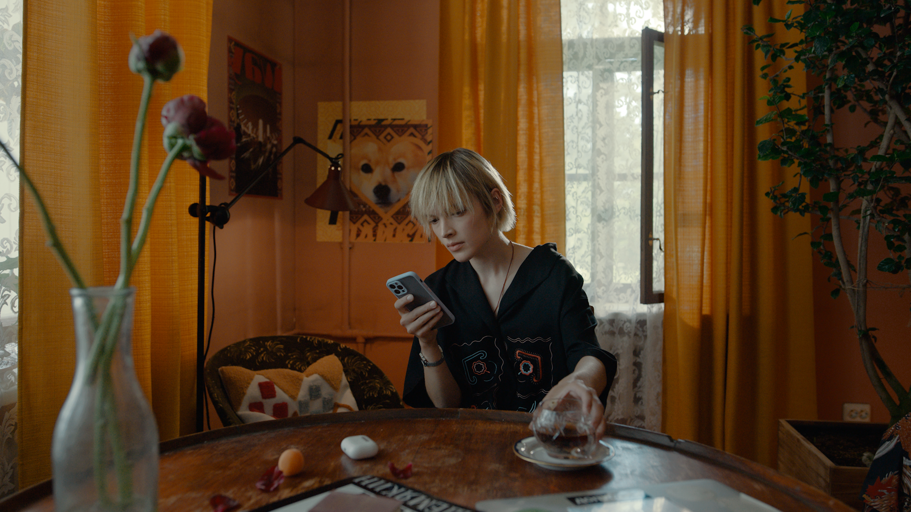
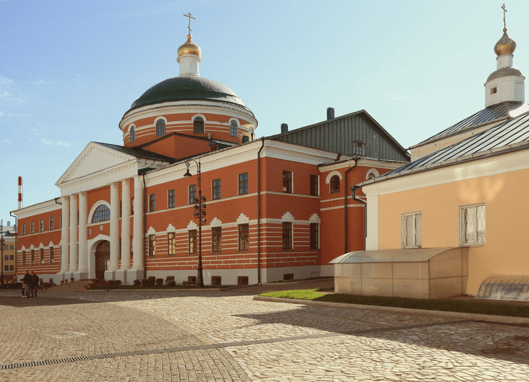
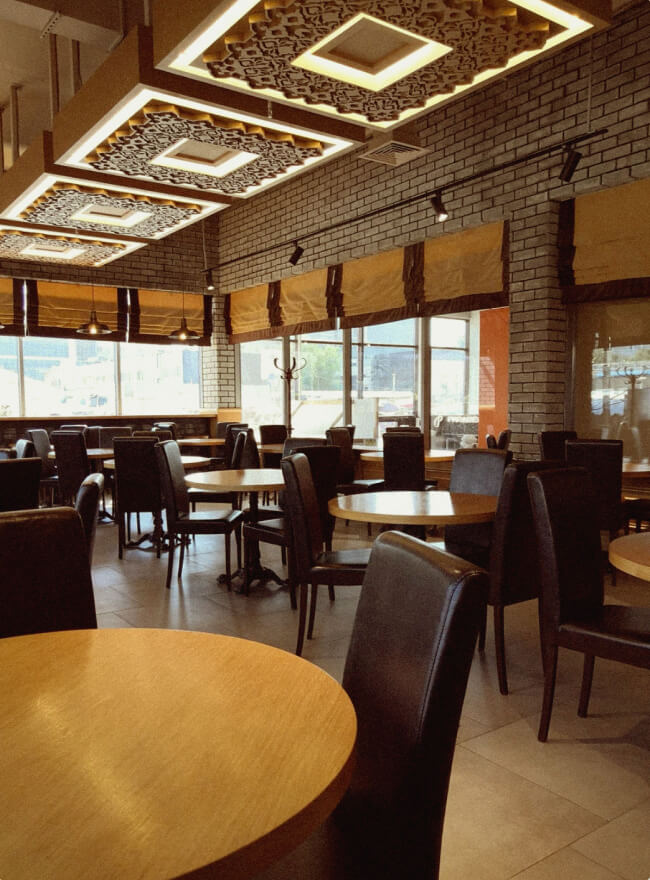

Узнаем как связаны Золотая Орда и стейк тартар, кони и тюльпаны, поэты и тутырма. Замедлим ход времени и помедитируем среди лотосовых озёр. И всё это — не вставая с дивана — как в сказке.
Kosmogenez / Shutterstock
о татарах
Татары — народ, составляющий почти 4% всего населения нашей страны. Они живут на всей территории России, но больше всего их в Татарстане и Башкортостане.
После того как в XV веке Золотая Орда раздробилась на мелкие ханства, появились казанские, астраханские, сибирские татары и татары-мишари. Впрочем, эта гипотеза происхождения татар не единственная. Да и генетические исследования открывают всё более увлекательные и пока не объяснённые подробности.
Как бы то ни было, татарский относят к кыпчакской группе тюркских языков. В Республике Татарстан татарский язык — государственный, наряду с русским. И где бы татары ни поселились, они очень уважают свою национальную самобытность, чтут язык, сохраняют обычаи и культуру.
Как бы то ни было, татарский относят к кыпчакской группе тюркских языков. В Республике Татарстан татарский язык — государственный, наряду с русским. И где бы татары ни поселились, они очень уважают свою национальную самобытность, чтут язык, сохраняют обычаи и культуру.
Большинство историков считают, что современные татары — потомки монголо-тунгусо-маньчжурских кочевников, половцев, хазар и волжских булгар. Основой татарского языка стал половецкий, на письменность повлияли тюркская руника и арабская графика, а исламскую традицию и городскую культуру татары заимствовали в Волжской Булгарии. Геополитическим центром новой нации стал улус Джучи (Золотая Орда) — средневековое государство, входившее в состав грандиозной Монгольской империи Чингисхана.
Традиции и кухня
Среди многочисленных национальных традиций, уходящих корнями в глубь времён и бытующих до сих пор в каждом доме, важнейшей и живой остаётся татарское чаепитие.
Это совсем не перекус на ходу, а настоящее застолье с разговорами и угощением. К чаю обязательно подают мёд и сладости и пироги.
Вежливый гость должен выпить не меньше трёх чашек, а радушный хозяин никогда не нальёт чай до краёв. Ведь полную чашку подают лишь нежеланным гостям.

Чаепитие в доме муллы.
Уфимская губерния, 1911 год.
Уфимская губерния, 1911 год.
Старинные татарские фотографии/«Вконтакте»
Легенды о неутомимой татарской коннице, способной в один переход покрыть сотни километров, добрались даже до европейских кулинарных книг. Придуманный французскими поварами способ подавать к столу мелко нарезанное сырое мясо — а-ля тарта́р (так во Франции некогда услышали от китайцев и запомнили слово «татарин») — будто бы опирается на привычку татарских всадников класть под седло ломоть говядины. К концу скачки он превращается в сырой бифштекс, который остаётся лишь слегка приправить специями и съесть. Это, скорее всего, выдумка, однако классические татарские блюда и в наши дни готовят из того, что всегда под рукой, — из мяса (жареного, тушёного, вяленого) и скороспелого теста.
Свинина в традиционный рацион не входит (для мусульман её употребление — грех), зато конская колбаса — казы — настоящий деликатес. Требующие много времени поварские техники, вроде ферментации, засолки, томления часами на слабом огне, — не для татар. Еду готовят быстро — видимо, сказывается кочевое прошлое. Зато застолье с неспешными разговорами, уважительными шутками и ощущением умиротворения и спокойствия может длиться часами. Вот несколько хитов татарской кухни.

Современные татары занимаются тем же, чем и все прочие земляне: растят детей, стараются быть счастливыми и как-то совмещать внутреннюю гармонию и работу. И хотя лучшее, конечно, впереди, иногда кажется, что в прошлом люди были мудрее, а жизнь их текла размереннее.
Сапог детский. Конец XIX — начало XX века. Мозаика по коже
Национальный музей республики Татарстан / goskatalog.ru
Долгими зимними вечерами татарские мастерицы мечтали о лете, отсюда — непривычно яркие цветочные узоры на традиционных скатертях, рубашках, наволочках и нарядных пиалах. Мужчины среди прочего занимались сапожным делом и мастерски складывали мозаику из разноцветной кожи. Сшитые в этой технике сапоги берегли и передавали по наследству, а надевали лишь по особым случаям. Или дарили детям.
Наволочка белая с татарским цветочным орнаментом. 1920-е годы. Вышивка тамбурным швом. Ислам запрещает изображать людей и животных, поэтому традиционный мотив татарских узоров — цветы и травы
Краеведческий музей Бавлинского муниципального района Республики Татарстан / goskatalog.ru


Стиль и спокойствие
ТАТАРСКАЯ пижама
Взрослая пижама
c татарскими узорами
c татарскими узорами
ООО «ЯНДЕКС» (ОГРН 1027700229193, 119021, Москва, ул. Льва Толстого, д.16)



Орнаменты живут и в современной культуре. Например, эту пижаму с узорами мы создали в коллаборации со студией Outlaw Creative — творческим подразделением бренда одежды Outlaw Moscow. Дизайнер бренда Диляра Минрахманова уже имела дело с традиционными народными узорами и лихо адаптирует их к современным представлениям о прекрасном и модном.
И кстати, Диляра родилась и выросла в Татарстане, а стало быть, все эти травинки, листочки и завитки — часть её детских воспоминаний, самый счастливый, радужный и безмятежный культурный код.
Колыбельная
Знакомство с новой культурой бывает волнительным, но колыбельная может стать неплохим успокаивающим саундтреком. Эта колыбельная была записана во время фольклорной экспедиции в 1973 году в деревне Верхняя Терешка Старокулаткинского района Ульяновской области.
ТАТАРСКАЯ
КОЛЫБЕЛЬНАЯ

Баю-баю – заснет он.
В Бухару поедет он.
Когда вернется из Бухары,
Муллою будет он.
Книги не запрячет,
Плохое не полюбит,
Как ленивые дети,
Играя и смеясь, лежать без дел не будет.
Красивым быть хорошо,
Набираться знаний нужно,
У такого ребенка
Будет светлая судьба.
Вот уж вырос этот мой милый,
Очень пригожий он, оказывается,
То ли цветочек, то ли в цветке
Заночевавший соловей он.
Баю-баю, мой желанный,
Расскажу тебе я сказку.
Ты, мой милый, словно луна,
Засни, растаяв как масло.
В Бухару поедет он.
Когда вернется из Бухары,
Муллою будет он.
Книги не запрячет,
Плохое не полюбит,
Как ленивые дети,
Играя и смеясь, лежать без дел не будет.
Красивым быть хорошо,
Набираться знаний нужно,
У такого ребенка
Будет светлая судьба.
Вот уж вырос этот мой милый,
Очень пригожий он, оказывается,
То ли цветочек, то ли в цветке
Заночевавший соловей он.
Баю-баю, мой желанный,
Расскажу тебе я сказку.
Ты, мой милый, словно луна,
Засни, растаяв как масло.
Әлли-бәлли итәр бу
Бохарага китәр бу.
Бохарадан кайткачтын
Мулла булып җитәр бу.
Китабын качаратмас,
Начарлыкны яратмас.
Ялкау балалар кебек
Уйнап-көлеп тик ятмас
Матур булу әдәпле
Сабак уку сәбәпле
Моның кебек яхшы бала
Булыр якты гадәтле
Үсеп җиткән иркәм бу,
Бигрәк күркәм икән бу,
Чәчәк микән, гөлләргә
Кунган был-был микән бу.
Әллү-бәллү көйләрем
Хикәяләр сөйләрмен.
Син дә иркәм ай кебек
Йокла эреп май кебек
Бохарага китәр бу.
Бохарадан кайткачтын
Мулла булып җитәр бу.
Китабын качаратмас,
Начарлыкны яратмас.
Ялкау балалар кебек
Уйнап-көлеп тик ятмас
Матур булу әдәпле
Сабак уку сәбәпле
Моның кебек яхшы бала
Булыр якты гадәтле
Үсеп җиткән иркәм бу,
Бигрәк күркәм икән бу,
Чәчәк микән, гөлләргә
Кунган был-был микән бу.
Әллү-бәллү көйләрем
Хикәяләр сөйләрмен.
Син дә иркәм ай кебек
Йокла эреп май кебек
Прекрасная песня, полные надежд напутствия. Но когда ты уже не младенец, возникают вопросы: зачем ребёнку ехать в Бухару? Почему именно туда? И как эта поездка научит его хорошему? Ужасно любопытно!
А дело в том, что в Бухаре с XVI века и по сей день работает медресе Мири-Араб — знаменитое на всю Среднюю Азию духовное учебное заведение. Значит, мальчик будет взрослеть, набираясь мудрости у бухарских мударрисов (преподавателей).

Алиса, включи татарскую колыбельную*
Вот, что рассказывает о кредо группы Тимур Милюков: «Мы пытаемся помочь татарской культуре существовать и развиваться сегодня, а не сохранить её такой, какой она была исторически. Мы пишем новые песни на татарском языке на стихи современных татарских поэтов. Мы верим, что народная культура — это не музейный экспонат, а инструмент, нужный для жизни современному человеку».
Познакомьтесь поближе
город Казань
Казань — столица и сердце Республики Татарстан, отметившая своё тысячелетие в 2005 году. Это крупнейший город Приволжского федерального округа, расположенный на левом берегу Волги. Здесь постоянно кипит жизнь: открываются новые рестораны и бары, проходят концерты и спортивные мероприятия.
За столичной энергетикой сюда приезжают со всей республики. А за татарской культурой — со всей страны, тут она представлена с самых разных сторон. Однако даже в таком большом и шумном городе мы нашли места для неспешных прогулок и обретения гармонии.
Отели в Казани
Старо-татарская слобода
E.O./Shutterstock.com
Яркие дома (каменный низ, деревянный узорчатый верх) татарских купцов, промышленников и буржуазии, несколько кафе традиционной кухни, мемориальный музей поэта Габдуллы Тукая и этнографический музей чак-чака (главного татарского лакомства) и прочих сладостей — прогулка займёт полдня, не меньше.
ул. Каюма Насыри, 38
Национальный музей Республики Татарстан
Ula Ulachka/Shutterstock.com
Alizada Studios/ Shutterstock.com
Стоянка древнего человека и карета времён Екатерины II, национальные костюмы и традиционное оружие, ремёсла и книги, быт и духовная жизнь — максимально широкий взгляд на историю и культуру Татарстана. Было бы как минимум невежливо оказаться в главном татарском городе России и проигнорировать это собрание. Тем более что посетителей здесь куда меньше, чем напротив — в недавно обновлённых музеях Казанского кремля. А время в залах бывшего гостиного двора, где располагается музей, словно бы замедлилось. Поход сюда — самое то для обстоятельного и несуетного погружения в истории об Истории.
ул. Кремлевская, 2
Музей Каюма Насыри
nasiyri.tatmuseum.ru
Личные вещи татарского филолога и писателя Каюма Насыри разместили в точной копии его дома. А в саду лекарственных растений при музее буквально воплотили в жизнь книгу Насыри «Цветы и травы» и совместили духоподъёмное с приятным.
ул. Парижской Коммуны, 35
Закабанная мечеть
Посвящённая тысячелетию принятия ислама в Поволжье мечеть интересна уже потому, что построили её на заре советской власти — в 1920-х годах, в разгар антирелигиозной кампании. Но для тех, кто в любом странствии ищет спокойствия, сама прогулка к мечети вдоль озера Кабан будет просветляющей.
ул. Хади Такташа, 26
Казанский Богородицкий мужской монастырь

Lyudmila Sh/Shutterstock.com
К татарской культуре православная обитель, построенная в классицистическом стиле, отношения не имеет. Однако в отечественной истории это место сыграло большую роль. Именно здесь в июле 1579 года по преданию был обретён образ Казанской Божией Матери — одна из самых почитаемых в России икон. Чтобы не толкаться среди паломников и туристов, стоит изучить расписание богослужений и приходить в промежутках между службами. На обширной монастырской территории немало укромных уголков, где можно вдоволь предаваться мечтам и размышлениям.
ул. Большая Красная, 5
А где поесть
Ресторанов и кафе в Казани, как в любом мегаполисе, полно на любой вкус и запрос. Мы выбрали несколько мест, где готовят традиционные татарские блюда и избегают чересчур модных веяний
Назвать тихими или спокойными эти рестораны сложно, ведь там, где вкусно, людей всегда немало. К тому же казанские рестораторы, как правило, располагают свои заведения в помещениях, рассчитанных на большое количество едоков.
И всё же официанты всегда помогут найти уютный столик, а уж когда на нём устроятся щедрые татарские блюда, спокойствие и хорошее настроение гарантированы.

Татарский ресторан Чирэм/«Вконтакте»
«Чирэм»
Если прийти в компании, а не в одиночку, то в один присест можно попробовать каклаган-каз (вяленого гуся), кыстыбай (тонкую лепешку с начинкой), фермерский сыр, тутырму (конскую колбасу с гречкой), пирожки элеш и эчпочмаки. А после — ещё и домашнего варенья к травяному чаю попросить
Если прийти в компании, а не в одиночку, то в один присест можно попробовать каклаган-каз (вяленого гуся), кыстыбай (тонкую лепешку с начинкой), фермерский сыр, тутырму (конскую колбасу с гречкой), пирожки элеш и эчпочмаки. А после — ещё и домашнего варенья к травяному чаю попросить
Казанский Кремль, проезд Шейнкмана, 38

Яндекс Карты
«Биляр»
Домашняя лапша с курицей или бульон с эчпочмаком? Пельмени с бараниной или жаренная на сковородке форель? Уха волжская, конина с грибами, пироги из дровяной печи — всё как у бабушки.
Домашняя лапша с курицей или бульон с эчпочмаком? Пельмени с бараниной или жаренная на сковородке форель? Уха волжская, конина с грибами, пироги из дровяной печи — всё как у бабушки.
проспект Победы, 50а
tatusadba.ru
«Татарская усадьба»
Внушительный ресторанно-гостиничный комплекс в Старо-Татарской слободе рассчитан на туристов. Но пугаться не стоит! Казанские гурманы тоже любят здешнюю кыздырму (телятину с картошкой), а уж они-то знают толк в национальной кухне. А ещё «Татарская усадьба» расположена прямо на берегу озера Кабан, так что после знатного обеда можно полюбоваться окрестностями и дойти по набережной до ближайшего парка.
Внушительный ресторанно-гостиничный комплекс в Старо-Татарской слободе рассчитан на туристов. Но пугаться не стоит! Казанские гурманы тоже любят здешнюю кыздырму (телятину с картошкой), а уж они-то знают толк в национальной кухне. А ещё «Татарская усадьба» расположена прямо на берегу озера Кабан, так что после знатного обеда можно полюбоваться окрестностями и дойти по набережной до ближайшего парка.
ул. Шигабутдина Марджани, 8

Но не только Татарстан
Город Астрахань. Прежде чем стать самостоятельным ханством, Хаджи-Тарханом из татарских легенд, нынешняя территория Астраханской области побывала в составе Хазарского и Тюркскского каганатов, Ногайской и Золотой Орды.
Обычаи и жизненный уклад астраханских, казанских и мишарских татар не растворились ни в мультикультурной Астрахани, ни в Нижнем Поволжье.
В резных домах Татарской слободы читают выходящую на родном языке газету «Идель», а за покупками местные жители ходят на колоритный Татар-базар.
Татарская слобода
К западу от улицы Мусы Джалиля

Чтобы найти умиротворение и обрести гармонию, нет ничего лучше, чем выбраться на природу. Неподалёку от Астрахани, расположенной в дельте Волги, раскинулись живописные владения Астраханского биосферного заповедника, а там — лотосовые озёра и бесшумные паромные переправы,
наблюдение за краснокнижными птицами и скольжение в лодке по водной глади, волжская уха, пряный степной воздух и солоноватый каспийский ветер. Поездка в эти места заставит забыть стресс и восстановит силы. Правда, фотоаппарат очень скоро устанет, и память его запросит пощады.
Отели в Астрахани
Татарская и русская культура по-прежнему мирно соседствуют в живописном городке Касимов (Рязанская область).
Расположенный в 165 километрах от Рязани древний город Низовой Городец был пожалован Василием Тёмным союзнику — татарскому царевичу Касиму и на два века стал столицей влиятельного Касимовского ханства. Здесь порой кажется, что время течёт неспешно, точно в XVIII веке,
а главный повод для волнения — выбор блюд к обеду.
а главный повод для волнения — выбор блюд к обеду.
С крутого косогора открывается такой благолепный вид на Оку, что рука сама собой тянется к воображаемому мольберту — ни один фотоаппарат гармонию такого пейзажа не передаёт. Из Касимова можно по старинке, без суеты и раздражения, уплыть куда глаза глядят.
А в самом городе осмотреть чудом сохранившиеся, но, увы, подрастерявшие декор усыпальницы татарских шахов и особняки торговцев каракулем, ямские станции и лавки ремесленников — всё это касимовцы ценят, восстанавливают и берегут. Больше узнать о взаимном обогащении культур, о татарских предпринимателях, меценатах, поэтах и ремесленниках можно в небольших городских музеях. Главное — не торопиться.
Татары — второй по численности народ, населяющий Оренбург и Оренбургскую область.

Оренбургские степи
Однако, помимо нескольких мечетей XIX века, архитектурных памятников татарского присутствия в городе не сохранилось. Зато нематериальная культура — традиционные праздники, национальные школы, государственный театр и даже официально признанная Оренбургская культурная автономия — процветает.
Поездка по бескрайней Оренбургской степи — ошеломительное, просветляющее и медитативное приключение. Тут всё как во времена «Капитанской дочки», разве что ямщик не затягивает бесконечную меланхоличную песню. Но с этим вы и сами справитесь, вот услышите
Отели в Оренбурге
Город Томск (Татарская слобода, или Заисточье)

ELINA BELIAKOVA/Shutterstock.com
Отыскать такой портал в прошлое в городе молодых и энергичных студентов — превосходный подарок себе.
К западу от проспекта Ленина
до реки Томь
до реки Томь
Эуштинские татары живут в этих местах со времён Бориса Годунова. А сегодня Заисточье — живой микрорайон, застроенный колоритными, со множеством резных деталей, деревянными домами XVIII–XX веков — место романтических прогулок и погружения в обстоятельный сибирский уклад.
татарский сувенир
Любимый татарский цветок — тюльпан. Его стилизованные изображения можно найти в национальных вышивках, росписях и орнаментах
Татарская пиала, напоминающая раскрывшийся тюльпан и тюльпановым узором расписанная, пригодится вам, даже если чай вы пьёте только в гостях. Для сластей, бульона или как украшение дома и напоминание о том, что время от времени нужно переводить дух и никуда не торопиться.
Забронировать отель с кешбэком до 30% и отправиться на поиски спокойствия в культуру татар
можно на сервисе**
можно на сервисе**

0+
*Доступно при наличии подписки Яндекс Плюс. Условия: https://clck.ru/S2yGv
**Акция с 25.06.2022 г. по 31.07.2022 г. Условия акции: https://clck.ru/rf2US. Только для пользователей с подпиской Яндекс Плюс.
**Акция с 25.06.2022 г. по 31.07.2022 г. Условия акции: https://clck.ru/rf2US. Только для пользователей с подпиской Яндекс Плюс.